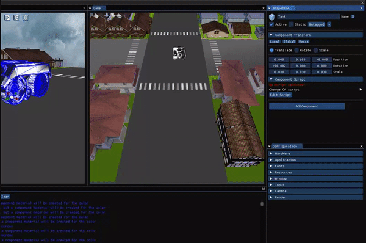
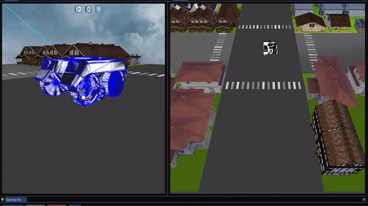

Main Core Sub-Systems
- Docking UI: The UI is structured in docks, the user may change the layout by dragging each window.
- Gameobject + Component structure: GameObjects follow a hierarchical structure, inheriting the transform matrix of their parent. To add functionality to this GameObjects, components are used.
- Resource Management: The engine has a resource management window, where the user can manage different types of files. From here, the user can Rename, load, delete, edit various files.
- Scenes: The engine allows the user to save “scenes”. Scenes are the group of game objects that are currently active at the moment of saving. When saving a scene, all the game objects will also save their respective components.
- Engine States: The engine executes scripts in the scene when the play button is pressed, pressing the play button will save the state of the scene, so if something changes while running, when the stop button is pressed, the scene will go back to its previous state. Pausing the scene allows the user to step, which updates all the gameobjects and their components once.
Scripting
The system we have implemented in the last assginment is scripting.
We have chosen C# as the language for our scripts, because of its popularity and good performance towards gaiming purposes. A lot of commercials engines, such as Unity have C# as their choice too.
In order to implement the scripting system we are using Mono, a library that allows to "translate" C# code into C++ and viceversa. To do that, we have ported our own functions to C#, so scripts can read them.
Finally, we have implemented a text editor that allows to open and edit scripts freely without having to exit or close the 3D engine


License
This is free and unencumbered software released into the public domain.
Anyone is free to copy, modify, publish, use, compile, sell, or distribute this software, either in source code form or as a compiled binary, for any purpose, commercial or non-commercial, and by any means.
In jurisdictions that recognize copyright laws, the author or authors of this software dedicate any and all copyright interest in the software to the public domain. We make this dedication for the benefit of the public at large and to the detriment of our heirs and successors. We intend this dedication to be an overt act of relinquishment in perpetuity of all present and future rights to this software under copyright law.
THE SOFTWARE IS PROVIDED “AS IS”, WITHOUT WARRANTY OF ANY KIND, EXPRESS OR IMPLIED, INCLUDING BUT NOT LIMITED TO THE WARRANTIES OF MERCHANTABILITY, FITNESS FOR A PARTICULAR PURPOSE AND NONINFRINGEMENT. IN NO EVENT SHALL THE AUTHORS BE LIABLE FOR ANY CLAIM, DAMAGES OR OTHER LIABILITY, WHETHER IN AN ACTION OF CONTRACT, TORT OR OTHERWISE, ARISING FROM, OUT OF OR IN CONNECTION WITH THE SOFTWARE OR THE USE OR OTHER DEALINGS IN THE SOFTWARE.
For more information, please refer to http://unlicense.org/